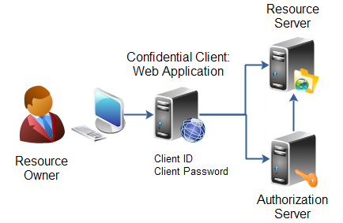
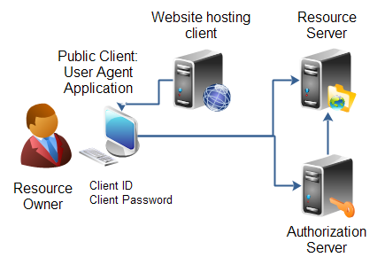
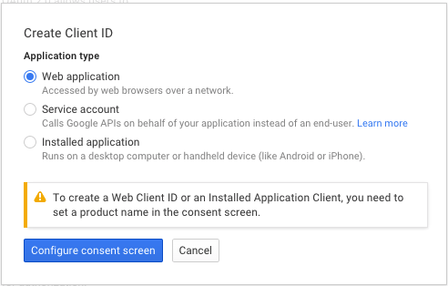

OAuth2.0 Crash Course
David MacDonald
With help from http://tutorials.jenkov.com/oauth2/index.htmlWhat is OAuth (2.0)?

Roles and Scopes

Client Profile
Thick Client Web Application
Client Profile
User Agent Application
Registering with Google
https://console.developers.google.com/
JavaScript Client Flow
- Website requests access via Javascript
- Redirect to Authorization Server
- User Grants Access
- User redirected back to page with access token
- User's browser launches request to resource server with access token
function handleAuthClick(event) {
gapi.auth.authorize({
client_id: "363817635896.apps.googleusercontent.com",
scope: "https://www.googleapis.com/auth/plus.me"},
handleAuthResult);
return false;
}
https://accounts.google.com/o/oauth2/auth?
client_id=363817635896.apps.googleusercontent.com&
scope=https://www.googleapis.com/auth/plus.me&
redirect_uri=https://www.summeroftech.com&
response_type=token
https://www.summeroftech.com/#
access_token=089df018-918f-4822-83ee-be7ed83da164&
token_type=Bearer&
expires_in=3600
gapi.client.load('plus', 'v1', function() {
var request = gapi.client.plus.people.get({
'userId': 'me'
});
request.execute(function(resp) {
var heading = document.createElement('h4');
heading.appendChild(
document.createTextNode("Hi " + resp.displayName));
document.getElementById('content').appendChild(heading);
});
});
Web-Application Client Flow
- Web-application redirects user to authorization server
- User Grants Access
- User redirected back to page with authorization token
- Web-application exchanges authorization token for access token
- Web-application launches request to resource server with access token
flow = OAuth2WebServerFlow(
client_id='363817635896.apps.googleusercontent.com',
client_secret='olKsDnnp95vBLfDmWPSwjT08',
scope='https://www.googleapis.com/auth/plus.me')
callback = self.request.relative_url('/oauth2callback')
authorize_url = flow.step1_get_authorize_url(callback)
self.redirect(authorize_url)
https://accounts.google.com/o/oauth2/auth?
client_id=363817635896.apps.googleusercontent.com&
scope=https://www.googleapis.com/auth/plus.me&
redirect_uri=https://www.summeroftech.com/oauth2callback&
response_type=code&
access_type=offline
https://www.summeroftech.com/oauth2callback?
code=jHpY6Rslb32PWBiR9bU6wJ4GrMmF
credentials = flow.step2_exchange(self.request.params)
POST /o/oauth2/token HTTP/1.1
Host: accounts.google.com
client_id=363817635896.apps.googleusercontent.com&
redirect_uri=https://www.summeroftech.com/oauth2callback&
grant_type=authorization_code&
code=jHpY6Rslb32PWBiR9bU6wJ4GrMmF&
client_secret=olKsDnnp95vBLfDmWPSwjT08
{
"access_token":"1/fFAGRNJru1FTz70BzhT3Zg",
"refresh_token":"1/xEoDL4iW3cxlI7yDbSRFYNG01kVKM2C-259HOF2aQbI"
"expires_in":3600,
"token_type":"Bearer",
}
Mobile Applications
Use Google Sign-In (uses web-browser)
The Rest
- SSL Everywhere!
- Use a library where possible
- Careful with redirect URIs and Javascript Origins
- Google OAuth Playground